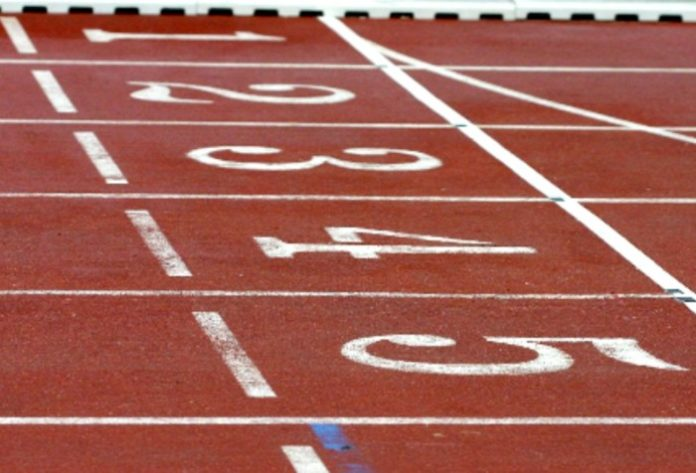

Τρέχοντα Νέα Στίβου
Πολλοί αγώνες διεξάγονται σε όλο τον κόσμο, καθώς και διάφορα νέα που αφορούν τον Στίβο και σας παρουσιάζουμε τα σημαντικότερα.
ΓΑΛΛΙΑ: Προς πώληση είναι τα εισιτήρια για το μίτινγκ κλειστού στο Παρίσι, που είναι προγραμματισμένο για τις 22 Ιανουαρίου και ανήκει στην κατηγορία WIT Silver. Μέχρι τις 30 Νοεμβρίου, θα κοστίζουν τα πιο φθηνά 7 ευρώ. Οι τιμές πάντως, παίζουν μεταξύ 7 ευρώ και 31,50 ευρώ. Ανάμεσα στους αθλητές που έχουν ανακοινωθεί πως θα πάρουν μέρος είναι οι δύο Αμερικανοί επικοντιστές Κ.Σ. Λάιτφουτ και Κρις Νίλσεν, η Γαλλίδα εμποδίστρια Ορέλ Μανγκά και η επίσης, Γαλλίδα πρωταθλήτρια των συνθέτων Σολέν Νταμά.
ΠΑΡΙΣΙ: Ο Παγκόσμιος Οργανισμός Αντιντόπινγκ (WADA) ενέκρινε ομόφωνα μεταρρυθμίσεις στη διακυβέρνησή του. Στη συνεδρίαση της Εκτελεστικής Επιτροπής και του Ιδρυτικού Συμβουλίου του Οργανισμού στο Παρίσι, ο πρόεδρος του WADA Ουιτόλντ Μπάνκα είπε: «Αυτές τις δύο ημέρες των συναντήσεων κατέληξαν σε σημαντικά βήματα προόδου για τον WADA και το κίνημα κατά του ντόπινγκ. Είμαι χαρούμενος που μπορέσαμε να σημειώσουμε πραγματική πρόοδο σε πολλούς βασικούς τομείς».
ΓΕΡΜΑΝΙΑ: Η Γερμανική Ομοσπονδία Στίβου δημοσίευσε νέους κανονισμούς για την ισότητα, τις ίσες ευκαιρίες και τη διαφορετικότητα.
ΒΕΡΟΛΙΝΟ: Μετά τις προπονήσεις, που ήταν ενθαρρυντικές, η Γερμανίδα σπρίντερ Αλεξάντρα Μπούγκχαρντ, που είχε φθάσει στα ημιτελικά των 100μ. στους Ολυμπιακούς Αγώνες στο Τόκιο (11η με 11.07), θα πάρει μέρος την Κυριακή 28 Νοεμβρίου στο Παγκόσμιο Κύπελλο στο ζευγάρι στο μπόμπσλεϊ. Παρτενέρ της θα είναι η ολυμπιονίκης Μαριάμα Τζαμάνκα. Η 27χρονη Μπούγκχαρντ έχει ως στόχο τους Ολυμπιακούς Αγώνες του 2022 στο Πεκίνο. Στον στίβο, όπως είχε γραφτεί και στο Sportime, στοχεύει στο Παγκόσμιο Πρωτάθλημα στο Γιουτζίν και στο Ευρωπαϊκό Πρωτάθλημα στο Μόναχο.
ΠΦΟΡΤΖΧΑΙΜ: Η Γερμανίδα «χάλκινη» παγκόσμια πρωταθλήτρια στα 5.000μ. Κοστάνζε Κλοστερχάλφεν θα πάρει μέρος στο μίτινγκ ανωμάλου δρόμου που θα γίνει την Κυριακή στο Πφορτζχάιμ. Επίσης, θα αγωνιστεί και η Αλίνα Ρε σε μια μάχη για πρόκριση για το Ευρωπαϊκό Πρωτάθλημα Ανωμάλου Δρόμου στο Δουβλίνο. Στους άνδρες φαβορί είναι ο Σάμουελ Φίτβι.
ΗΠΑ: Σε αγώνα δρόμου στο Μάντσεστερ νικητής στους άνδρες ήταν ο Καναδός Μπεν Φλάναγκαν που κάλυψε τα 4.748 Μίλια σε 21.23. Στις γυναίκες πρώτη ήταν η Αμερικανίδα Γουίνι Κελάτι σε 22.55. Η αθλήτρια που είναι γεννημένη στην Ερυθραία πέτυχε ρεκόρ διαδρομής και πήρες χρηματικό έπαθλο 10.000 δολάρια.
ΟΥΑΣΙΓΚΤΟΝ: Η Αμερικανίδα δρομέας Σέλμπι Χούλιχαν, η οποία έχει τιμωρηθεί με τετραετή αποκλεισμό λόγω χρήσης απαγορευμένων ουσιών και συγκεκριμένα με «ναδρολόνη», ξεκίνησε το πρόγραμμα «gofundme.com» σε μια προσπάθεια να συγκεντρώσει 300.000 λίρες για να καθαρίσει το όνομά της. Γρήγορα μάζεψε 9.000 λίρες και ελπίζει να κερδίσει στο Διεθνές Αθλητικό Διαιτητικό Δικαστήριο. Η αθλήτρια υποστηρίζει πως το δείγμα βρέθηκε μετά από κατανάλωση μπουρίτο δέκα ώρα πριν τον έλεγχο.
ΚΕΝΥΑ: Η Κενυάτισσα «ασημένια» παγκόσμια πρωταθλήτρια στα 5.000μ. το 2013 Μέρσι Τσερόνο θα πάρει μέρος στο πρώτο μαραθώνιο που θα γίνει την Κυριακή στην πόλη Νακούρου. Θα τρέξουν περισσότεροι από 500 δρομείς και το έπαθλο για τους νικητές είναι στις 4.400 δολάρια.
ΚΑΝΑΔΑΣ: Η 29χρονη Καναδή σπρίντερ Μπρίτνεϊ Ρόου ανακοίνωσε μέσω του προσωπικού της λογαριασμού στο τουίτερ την αποχώρησή της από την ενεργό δράση. Τα ατομικά της ρεκόρ ήταν 11.57 στα 100μ. και 23.52 στα 200μ.
ΟΤΑΒΑ: Την Κυριακή στην Οτάβα διεξάγεται το εθνικό πρωτάθλημα ανωμάλου δρόμου με φαβορί στις γυναίκες την Ζενεβιέβ Λαλόντ, η οποία ήταν φιναλίστ στα στιπλ στους Ολυμπιακούς Αγώνες στο Τόκιο.
ΟΥΓΓΑΡΙΑ: Ο Ούγγρος «χάλκινος» παγκόσμιος πρωταθλητής στα 110μ. εμπόδια Μπάλας Μπάτζι> εκλέχθηκε πρόεδρος της νέας επιτροπής αθλητών της Ολυμπιακής Επιτροπής της Ουγγαρίας.
ΠΟΛΩΝΙΑ: Η Πολωνική Ομοσπονδία Στίβου υπέγραψε συμφωνία με τον εθνικό οργανισμό αντιντόπινγκ για συνεργασία σε προπονητικά προγράμματα, συνεδριάσεις και προπονητικές συγκεντρώσεις.
ΣΛΟΒΑΚΙΑ: Παρουσία 44 από τα 50 μέλη της Ευρωπαϊκής Ομοσπονδίας πραγματοποιήθηκε σεμινάριο στο Σαμορίν. Το έπαθλο «Piotr Nurowski» του κορυφαίοι αθλητή δόθηκε στον Ρουμάνο κολυμβητή Νταβίντ Ποποβίτσι και το έπαθλο του καλύτερου νέου αθλητή στη Σέρβα ακοντίστρια Αντριάνα Βιλάγκος.
ΣΟΥΗΔΙΑ: Ο περσινός νικητής Άρμαντ Ντουπλάντις και ο Ντάνιελ Σταλ είναι ξανά υποψήφιοι για το βραβείο «Jerring», που δίνει το σουηδικό ραδιόφωνο όλων των αθλημάτων και ψηφίζει το κοινό.
ΦΙΛΙΠΠΙΝΕΣ: Ο πρωταθλητής του επί κοντώ από τις Φιλιππίνες, Έρνεστ Ομπιένα μηνύει την ομοσπονδία στίβου της πατρίδας του, για «ζημιά της φήμης μου», όπως αναφέρει. Η ομοσπονδία αρχικά ανακοίνωσε ότι αθλητής της χρωστούσε περίπου 85.000 ευρώ, αφού παραποίησε τα εκκαθαριστικά του και δεν είχε πληρώσει τον προπονητή του. Ο 26χρονος διαψεύδει τις κατηγορίες και πλέον πάει την υπόθεση στη δικαιοσύνη. Επιπλέον, ο προπονητής του Βιτάλι Πετρόφ επιβεβαιώνει με επιστολή του ότι πληρώθηκε από τον αθλητή, όπως είχε συμφωνηθεί από την έναρξη της συνεργασίας τους το 2018.
ΦΙΝΛΑΝΔΙΑ: Οι διοργανωτές του μίτινγκ στο Κουορτάνε αύξησαν το μπάτζετ των αγώνων κατά 150.000 ευρώ, όπου τουλάχιστον 500.000 ευρώ θα πάνε για να κλείσουν συμμετοχές καλύτερων αθλητών και περισσότερων χρηματικών επάθλων. Είναι το δεύτερο μεγαλύτερο μίτινγκ της χώρας, μετά τους αγώνες Paavo Nurmi και είναι silver επίπεδο στη σειρά της World Athletics Continental Tour. Η ημερομηνία διεξαγωγής του είναι στις 18 Ιουνίου του 2022.
Πηγή: sportime.gr